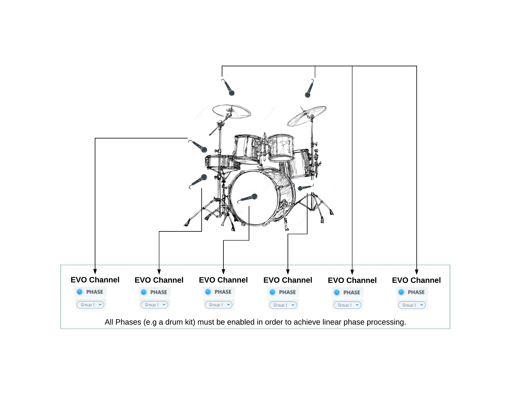

3 Module Settings
3.1 Analyser
3.1.1 Analyser Switch
The spectrum analyzer origins from the Flux:: Pure Analyzer and has been optimized for the EVO Channel. It gives you an accurate direct view of what’s going on in the different frequency domains of your audio. When switched on, the spectrum analysis is activated and displayed in the equalization view panel. The grey waveform correspond to your input signal (post gain/drive), the same as the input meter. The black one is the output signal (post output gain), the same as the output meter.
Value Range : Enabled/Disabled
Default Value : Enabled
3.1.2 Analyser Slider
Controls the amount of frequency detail of the curve. Move the slider to the left to get a more smoothed curved, and to the right to get more details.
Value Range : No Value
3.2 Input
3.2.1 Input Gain
The input gain control trims the level of the signal at the input of EVO Channel. The meter shows both RMS signal (VU-Meter, blue) and peak signal (peak meter, green), from -24 to +18 dB range, referenced at -18dB.
Value Range : -24.0 dB / +18.0 dB
Colors : - Blue : RMS Value - Green : Peak Value
Default Value : 0.0 dB
3.2.2 Drive
In EVO Channel a signal Drive is available direct at the input Gain for restoring and maintaining the vitality of the sound.
The drive module has been specially designed to add a soft saturation and warmth to your audio tracks.
Value Range : 0% / 100%
Default Value : 0%
3.3 Phase
One of the most crucial parameters to take into account; Phase, or “The art of using multiple microphones on one and the same sound source”, a classic example is when setting up the sound for a drumkit.
Controlling the Phase of microphones is universal and relevant both for studio and live use. In EVO Channel an Arbitrary and Linear Phase Rotation throughout the spectrum is provided, to accomplish the same natural thing as when physically moving a microphone, of course without adding any latency.

The phase must be enabled for all the drum tracks. Then set the same group number for all these tracks. It allows to enable and disable the phase for all the drums in one click (simply switch on/off for the phase in one of the tracks).
3.3.1 Phase Switch
The Phase is the result of Flux:: proprietary research, this unique algorithm allows linear phase correction with zero latency.
Activate the phase module on all of the tracks that were recorded at the same time and in the same room (multi- microphones tracking or live recording in exemple), and then use the slider on the different tracks until you get full control over the phase and everything sounds correct.
When enabled, the phase correction is turned on.
Value Range : Enabled/Disabled
Default Value : Disabled
3.3.2 Phase Group
Add an EVO Channel instance to a Phase Group. You can add an instance of EVO Channel to a group, all the members of the same group can then have their Phase enabled or disabled at one and the same time. To do so, add the instance to a group by selecting the group number for the desired group. Now when you then turn the phase switch on or off in any of the instances in the group, this will affect all instances that are members of the same group.
Value Range : None/Group number
Number of groups : 8 groups
Default Value : Disabled
3.3.3 Phase Correction
Set the shift value used to correct the phase.
Value Range : -180° / 180°
Default Value : 0°
3.3.4 Polarity Invert
When enabled, polarity inversion is applied to the signal.
Value Range : Enabled / Disabled
Default Value : Disabled
3.4 Equalization module
One of the corner stones in a Channel Strip is a well-built, efficient and complete Equalizer.
The EVO Channel EQ is a straightforward comprehensive 4-band equalizer with additional 6-24 dB Hi/Lo filters.
The graphical interactive EQ curve is layered on top of the built in Spectrum Analyzer for hands-on editing with direct connection to the visual response.
Built with our proprietary State-Space technology, like in Epure, the EQ section has been carefully tuned to preserve the optimal signal to noise ratio independent of the parameter settings preventing the signal from deteriorating when the gain is reduced. It’s an efficient sharp-edged surgical precision tool for the most demanding equalizing and filtering tasks conceivable.
Equalization module is divided in two parts : - A filtering part composed of a low cut, a low shelf, a high cut and a high shelf filter. - A parametric equalization stage made of four parametric EQs.
3.4.1 Low-Cut Switch
Enables the low cut filter.
Value Range : Enabled / Disabled
Default Value : Enabled
3.4.2 Low-Cut Cutoff Frequency
Cutoff frequency of the low cut filter.
Value Range : 20Hz to sampling rate / 2
Default Value : 20Hz
3.4.3 Low-Cut Slope
Slope of the low cut filter.
Value Range : 6dB/oct - 24dB/oct
Default Value : 6dB/oct
3.4.4 Low Shelf Switch
Enables the low shelf.
Value Range : Enabled / Disabled
Default Value : Enabled
3.4.5 Low Shelf Cutoff
Cutoff frequency of the low shelf.
Value Range : 20Hz / 22050Hz
Default Value : 100Hz
3.4.6 Low Shelf Gain
Target gain for frequencies below the cutoff frequency.
Value Range : -24.0dB / +24.0dB
Default Value : 0.0dB
3.4.7 High-Cut Switch
Enables the high cut filter.
Value Range : Enabled / Disabled
Default Value : Enabled
3.4.8 High-Cut Cutoff Frequency
Cutoff frequency of the high cut filter.
Value Range : 20Hz to sampling rate / 2
Default Value : Sampling rate / 2
3.4.9 High-Cut Slope
Slope of the high cut filter.
Value Range : 6dB/oct - 24dB/oct
Default Value : 6dB/oct
3.4.10 High Shelf Switch
Enables the high shelf.
Value Range : Enabled / Disabled
Default Value : Enabled
3.4.11 High Shelf Cutoff
Cutoff frequency of the high shelf.
Value Range : 20Hz to sampling rate / 2
Default Value : 5000Hz
3.4.12 High Shelf Gain
Target gain for frequencies above the cutoff frequency.
Value Range : -24.0dB / +24.0dB
Default Value : 0.0dB
3.4.13 Parametric Equalization Switches
Enables the corresponding parametric equalizer.
Value Range : Enabled / Disabled
Default Value : Enabled
3.4.14 Parametric Equalization Gain
Gain stage of parametric equalization.
Value Range : -24.0dB / +24.0dB
Default Value : 0.0dB
3.4.15 Parametric Equalization Center Frequency
Center frequency of parametric equalization.
Value Range : 20Hz to sampling rate / 2
Default Value : Default value depends of the equalizer used.
- Low parametric equalizer : 200Hz
- Mid-Low parametric equalizer : 500Hz
- Mid-High parametric equalizer : 1300Hz
- High parametric equalizer : 2500Hz
3.4.16 Parametric Equalization Q
Q value of parametric equalization. Defines the width of the EQ band.
Value Range : 1.0 Q / 100.0 Q
Default Value : 5.0 Q
3.4.17 Equalization Output Gain
A stage of gain at the output of the equalization module.
Value Range : -12.0dB / +12.0dB
Default Value : 0.0dB
3.5 Compressor
In addition to controlling the signal dynamics, the compressor is often used for shaping the attitude of a sound. To use a compressor in a creative and artistic fashion it’s important that it’s easy to use and has the ability to create an interesting sound.
The EVO Channel’s compressor module is based on the Pure Compressor’s dynamics engine, and the same range of compression types are available in EVO Channel through the different modes available (each mode corresponds to a fine tuning of Pure Compressor). As some modes use a LID compression (Level Independent Detection) in parallel, a gain reduction may be processed even if the audio level is below the threshold.
3.5.1 Mode
The compressor module gives you up to 9 modes of compression.
Available modes :
- Start
- Kick/Snare
- Overhead
- Drum Bus
- Bass
- Acoustic
- Piano
- Vocal
- Mix
Default Value : Start
3.5.2 Threshold
Threshold value of the compressor.
Value Range : -42.0dB / +18.0dB
Default Value : Depends on the Mode.
3.5.3 Ratio
Compression ratio parameter.
Value Range : 1.0:1 / 10.0:
Default Value : Depends on the Mode.
3.5.4 Attack
Attack value of the compressor.
Value Range : 0.1ms / 1000.0ms
Default Value : Depends on the Mode.
3.5.5 Release
Release value of the compressor.
Value Range : 1ms / 10000ms
Default Value : Depends on the Mode.
3.5.6 Auto Adapt.
When enabled, the compressor adapts its release time to the input signal depending on the audio signal, but won’t exceed the release time value.
Value Range : Enabled / Disabled
Default Value : Enabled
3.5.7 Gain Reduction Display
Displays the gain reduction performed by the compressor.
Value Range : 0dB / -24dB
3.5.8 Compressor Output Gain
Gain stage at the output of the compressor module.
Value Range : 0.0dB / 24.0dB
Default Value : 0.0dB
3.5.9 Wet
Wet parameter defines how much of the compressed signal is mixed with the original signal, for parallel compression.
Value Range : 0% / 100%
Default Value : 100%
3.6 Touch
Different types of material require different tools, whether it’s a vocal cut, drums, guitar, piano or something else, it requires the accurate specific treatment for the material.
The Touch module in EVO Channel is a polymorphic section offering a variety of different processors designed to adapt to the requirements of the material, with seven different processing modes including a DeEsser, Expander and a Transient and Sustain Designer.
With the adjustable signal flow in EVO Channel the Touch module can be inserted where it’s best doing its job, like having the DeEsser or Expander first in the flow, or the Transient designer after the compressor.

3.6.1 Mode
Mode parameter defines the processor used by the touch module. Seven different modes are provided.
Available modes :
- Transient Boost
- Transient Kill
- Sustain Boost
- Sustain Kill
- DeEsser 1
- DeEsser 2
- Expander
Default Value : DeEsser 2
3.6.2 Amount
The amount of signal processed by the Touch module.
Value Range : 0% / 100%
Default Value : 0%
3.6.3 Release/Range
There is a release parameter for the following modes :
- Transient Boost
- Transient Kill
- Sustain Boost
- Sustain Kill
- Expander
Value Range : 1ms / 1000ms
Default Value : 20ms
The two deesser modes offers a range parameter, to limit the maximum gain reduction.
Value Range : 0dB / 24dB
Default Value : 12dB
3.6.4 Frequency Range
The Touch module works on a defined frequency range.
Value Range :
Minimal bound : 20Hz
Maximal bound : Sampling Rate / 2
Default Value :
Inferior bound : 3.9kHz
Superior bound : up to Sampling Rate / 2
Range width : Depends on the sampling rate.
3.6.5 Listen
When enabled, you can monitor the actual signal setup with the frequency range.
Value Range : Enabled / Disabled
Default Value : Disabled
3.7 Output
3.7.1 Output Gain
The output gain control trims the level of the signal at the output of EVO Channel. The meter shows both RMS signal (VU-Meter, blue) and peak signal (peak meter, green), from -24 to +18 dB range, referenced at -18dB.
Value Range : -24.0 dB / +18.0 dB
Colors : - Blue : RMS Value - Green : Peak Value
Default Value : 0.0 dB